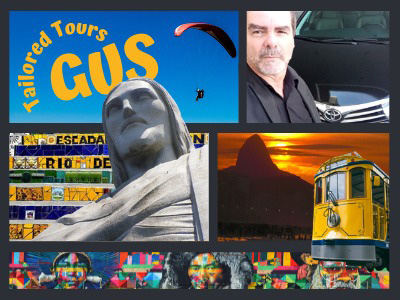
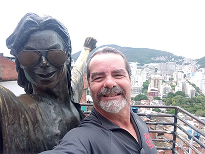
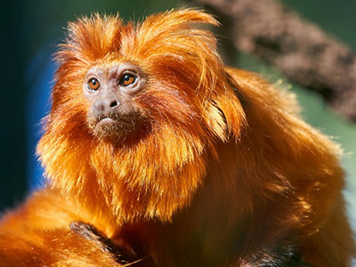
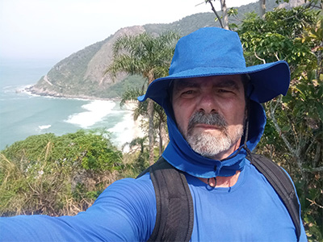
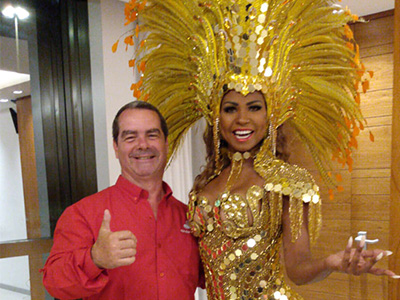
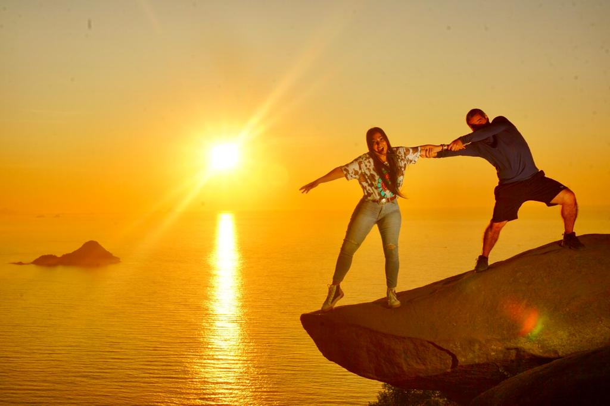
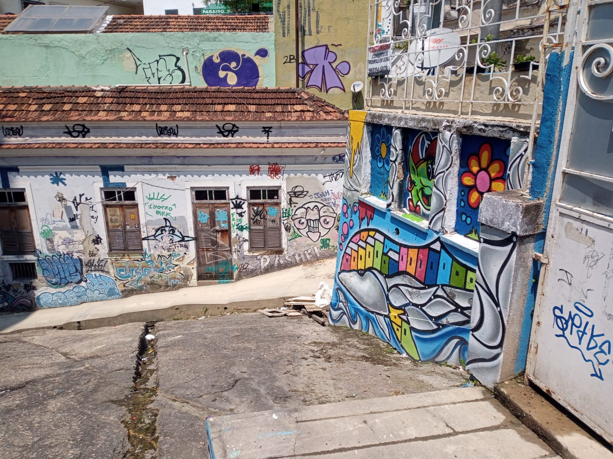
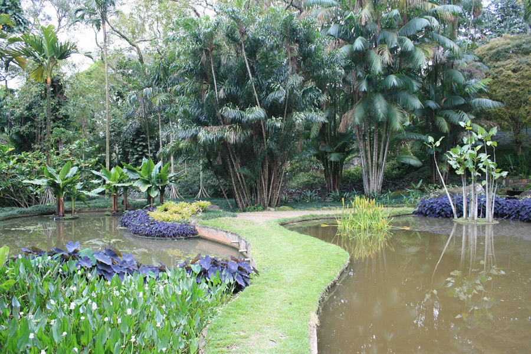
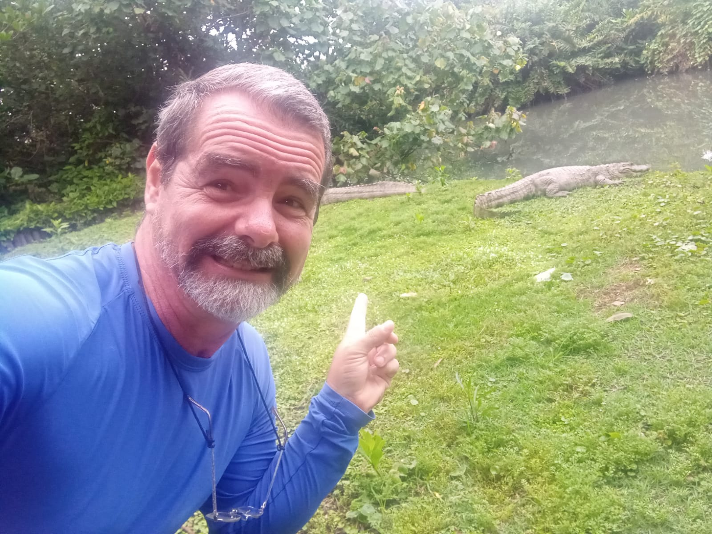
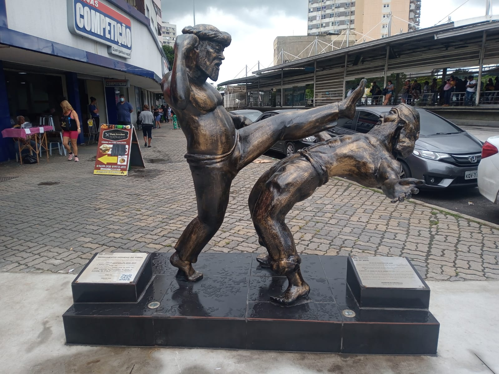

On this tour we cover 5 must see attractions of Rio.
That can be done in one day, like longer than usual, or split in two different days. I suit the tour according to your pace.
Football Match at Maracana Stadium
This is without a doubt the most thrilling and passionate experience one can have on Rio. The "heat" inside the stadium, with the crowd of fans, singing, chanting and yelling at the referee, is undiscribable. Fans greet you when there is a goal and people that you never saw, seem to be old friends . We mingle with the fans, at the most joyful area but not among the crazy ones. There are different types of seats, including the special boxes.
Dois Irmaos / Two brothers Hill tour and hike
On this tour we drive through the famous and safe Favela called Vidigal, on a motorcycle, as a passanger, up the curvy and narrow streets, with the so called Motoboys . That will give you a taste of how the community looks and take us to the beginning of the trail . We can also take a stop at the famous "Bar da Laje" to take some pictures and enjoy the gorgeous view.
The walk up to the top of the hill is around 50 minutes and the view is breathtaking . On the way down to the main street, we can either walk down or ride with the Motoboys again.
Helicopter Tour
Do you want to have a previleged and exclusive view of Rio ? Come and let me take you to the best price and benefit helicopter companies . Safe and a very unique experience .
Forest, Hikes and Cascades Tour
On this unique, open air tour, you can enjoy inumerous attractions in one the biggest urban forests in the world . In the national park, in the middle of the city of Rio, you can enjoy, easy, moderate or longer hikes in the over 100 miles of trails . At Tijuca Forest we can breath fresh air, away from the crowds, bathing at some cascades, going in some caves, watching some wild life, like capuchin monkeys, sloths and several birds like the toucan . You can take wonderful pictures with gorgeous views of the city
There are several options and I suit the tour according to your needs and pace. Half a day or full day tours.

Tailor made tours
On this tour you can choose and mix whatever site or location you wish. It can be organized on a special request you might have . I can organize it on a hourly basis or at a fixed price . This can also suit corporate , business people.
It can be done in a high standard car , van , bus or even an armed vehicle. Any of these options with a driver and guide or in a sedan car , with a driverguide , when the tour guide drives his own car.

Favela tour
I call it an experience tour as you can interact with the locals and artists . It is not an intrusive tour as it is beneficial to the community. We can just drive through the main street of the biggest one in Rio or take a walk inside , exploring with total safety. There are different Favelas so we decide which one you want to see ,including Rocinha , Vidigal or Santa Marta . All three have wonderful viewpoints. This is a half a day tour.

Golden Lion Tamarin
This Exciting and unique tour takes you approximately 1h 45 min from Rio , to a sanctuary , in a protected forest area , with a beautiful project that monitors and looks after this beautiful species of monkey. It is the only place in the world where you can find them in the wild. We go spot them in the bushes , feed them with some bananas and visit the headquarters to understand a bit more about the whole project. This a full day tour.

Wild beaches of Rio
This tour takes you around 45 min away from Copacabana ,driving along the beautiful seaside of Rio. We visit some hidden and secluded beaches like Secreto , Prainha , Grumari , Apricot , Perigoso and many others. Some of them can only be accessed via trails. This tour can be a mix of a very fun and relaxing day , with some good exercise and gorgeous nature hikes . I can dose the tour according to your pace as there are different options. This is usually a full day tour.

Backstage of Carnival
This is a great opportunity for the tourist to understand what is behind the scenes of the biggest carnival festival in the world. You understand more about the preparation and how the parades are organized.
We visit the City of Samba where the big warehouses are. We take a tour inside , seeing the huge floats , the costumes and learn a bit more about the history of Carnival
The gran finale is putting on a real costume and dancing with some Samba ladies. The workshop is every day , except sunday . Half a day tour.

Sunrise at Telegraph rock
This is a unique experience. The most stunning view, a spectacle of nature in a more secluded area of Rio. It is approximately 55 minutes away from Copacabana and a moderate 35-minute hike up the mountain, with the best reward seeing the sun rise little by little and the famous and trendy picture hanging off the famous rock. And on top of all, no lines as we beat the crowds because it usually reaches over 1 hour wait.

Little Africa and street art
This tour takes you back in time, to understand how the terrible time of slavery happened in Rio for over centuries. Rio received approximately 2 million slaves, among the 5 million who came to Brasil. We visit the "young black cemetery " as well as Valongo , the old wharf where the African slaves disembarked. We also do some walking though some crooked streets. Pedra do Sal can also be enjoyed as the most authentic Samba root night in Rio, with its bars and mostly locals: lots of fun and Samba music. This tour can be half a day or a night tour at Pedra do Sal and Largo da Prainha.

Burle Marx and the west side beaches
Full day tour. This is a gorgeous garden where the most famous landscaper of Brasil lived. He brought tress and plants from all over the world. We also visit the house where he lived, inside the garden, that is now a museum. Inside there is also a church from the 1700's. We stop for lunch on the beach or at a restaurant with a gorgeous view of the seaside. On the bay back, we drive and take some stops at some stunning and less crowded beaches of Rio , like Grumari , Prainha and Apricot , with option of bathing or just pictures

Wild life and the wetlands of Rio.
Believe or not, we do have some wild animals living peacefully in the wilderness of Rio, in forest areas like the National Park and the wetlands as well. Capybaras, alligators, different monkeys, toucans , parrots , hawks and many other endemic birds . On a lucky day we might spot a sloth and amarillos, not to mention the boa constrictor .... but no worries, we stay way from them, respecting their territory. This can be a half or full day tour.

Capoeira experience with a taste of the Favela
On this tour we enjoy a show of authentic capoeira, like in a workshop, where you can learn some steps and learn more about this sport/fight that was brought to Brasil by the slaves and Afro Brazilian community that nowadays is incorporated in our culture. We can also do some walking in the Favela, being beneficial to the community.